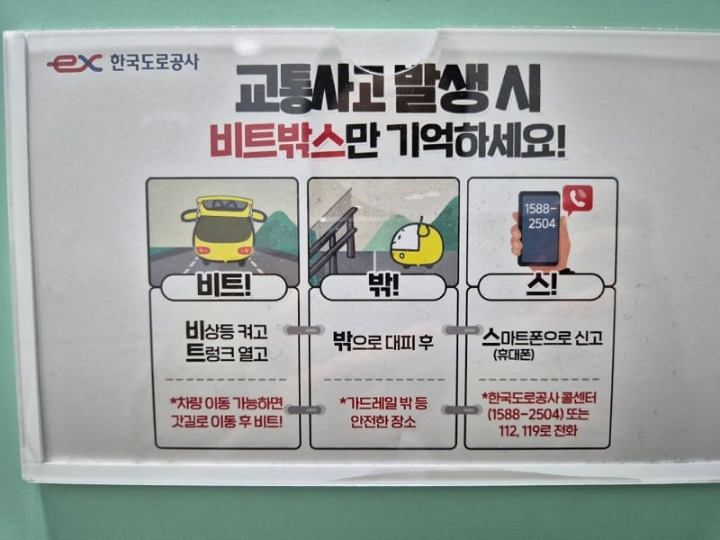

삼각대 설치하러 가다가 2차사고 생기는 일 많아서 빠짐

삼각대 설치하러 가다가 2차사고 생기는 일 많아서 빠짐
이거 첨엠 이게뭐꼬 했는데
지금은 딱 생각남ㅋㅋㅋ
어차피 앞을 보는 사람이면 트렁크만 열려있어도 무조건 알 수 밖에 없고 앞을 안보는 개새끼면 삼각대를 펼치든 경광등을 키든 미사일을 쏘든 안보고 그냥 풀악셀로 쌔려박음
그냥 피하는게 맞음
멀리 삼각대를 하나 세워두면 그거 밖고 아씨발 하고 멈추긴 할거니까 2차사고가 방지가 되긴 할텐데....
끈달려서 던지면 오뚜기같이 딱 세워지는 삼각대 예전에 봤었는데
정확하게 얘기하면 삼각대 설치해서 사고를 막기 위한 노력을 하면 과실비율이 줄어듬 즉 원래 80대20 받을거 100대0 나올 수도 있다는거임 근데 그렇다고 무지성으로 무조건 삼각대 설치하려고 위험하게 행동하지 말라는 의미임 낮 사고 같은 경우 불가피한 정차고 갓길로 이동 할 수 없는 상황이면 비상등 켜는것만으로 과실비율 0이 가능함 하지만 코너나 야간 같이 시야가 제한적일 경우는 비상등만 켰다고 과실 0이 안나오는듯 솔직히 그것마저 100대 0이면 뒷 차 입장에서 너무 억울하잖아
비트에 몸을 맡겨라
삼각대 세워도 안보고 꼬라박는데 걍 두고 도망가는게 맞다
트렁크에 클럽 깜빡이 조명 같은거 비상용으로 설치해서 나오면 안 되나
안 보는 새낀 뭐 어떻게 해도 안 볼테지만
야간에 시야가 혼동되게 미허가 등화장치 설치했다고 신고하고 그 설치물이 전방주시를 못하게 방해했다고 과실비율 조정해달라는 개소리 하는놈 무조건 나옴
경광봉은 허용이잖아 슈벌
가짜 경철경고등도 길옆에 있드만 ㅠ
원래 이나라의 법은 가해자편임
저건 참 잘만든 슬로건같아
북치기 박치기
난 혹시 몰라서 불꽃신호기 트렁크에 뒀는데 아직까지 써본 적은 없음...
트렁크만 열어도 전방주시 하는 사람이면 바로 감속하던 차선변경하던 하겠지
난 그래서 2차사고 대비로 나뭇잎마을가서 삼중나생문 배움
비!트!박!스!
비상등 켜고! 트렁크 열고! 박ㄱ으로 나가고! 스마트폰 신고!
박으러 나가고
차라리 소리크게나는 사이렌하나 사서 차지붕에 붙여놓고 나오면 좋지않을까? 알리같은데서 팔던데
요거 줄임말 잘만들어놓은거같음.
나 처음 고속도로에서 타이어 터져서 갓길에 세워뒀을 때 아무생각없이 비상등만 켜고 차안에 타있었거든.
렉카 기사님이 오셔서 밖에 나와있어야 한다고 이야기 해주시더라.
그런거 기본은 할 수 있게끔 확실히 알려주는거라 참 좋은듯.
ㅇㅇ 갓길에 새우면 차안에 타있어도 되는줄 아는 사람들 많았는데 저렇게 줄임말로 딱 외우기 쉽게 전파하는 캠페인 좋은거 같음
도로공사 전화번호도 1588 둘오공사ㅋㅋㅋㅋㅋㅋㅋㅋ
고장난 차 뒤에서 북치기박치기 하고 있음 되는거지??
미래에는 모든 차들이 다 자동ai시스템이라 알아서 피할텐데.. 어제도 고속도로 1차선에 중장비차량 세워두다가 박아서 사람 죽었다매 미래에는 이런 상황이 절때 안나오겠지
자동화 되도 수동으로 몰고 가다가 죽는 사람은 있을거임
고속도로 화장실 들릴때마다 무조건 보여서 까먹을 일이 없음 ㄲㄲ